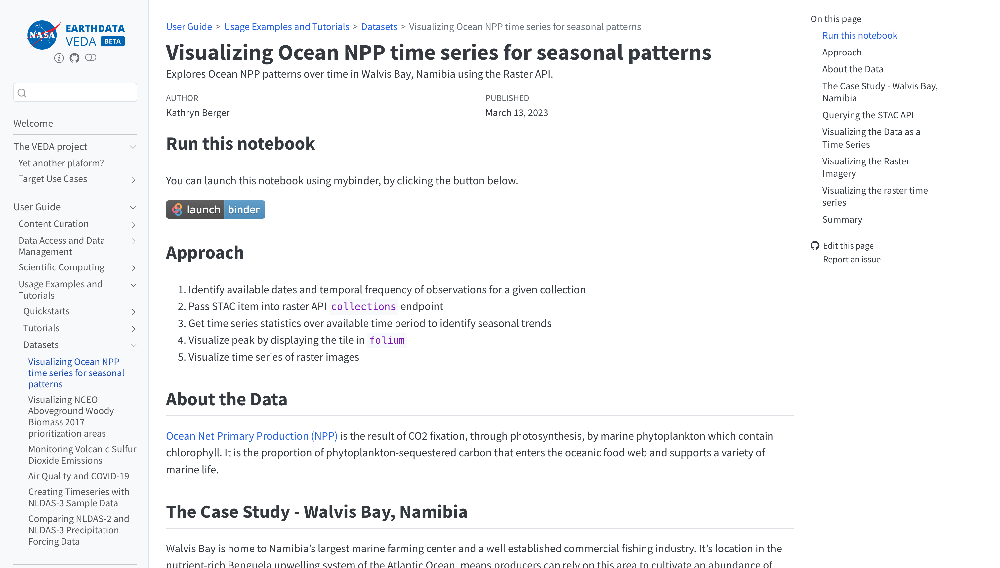

some STAC stuff

Pete Gadomski
2025-03-05
STAC
STAC
STAC entities

Usage

STAC is the map to your data
— Howard Butler
STAC's sweet spot is L1 to L2
— me
In the wild

VEDA notebooks
Python STAC ecosystem
PySTAC
from pystac import Catalog
root_catalog = Catalog.from_file("./example-catalog/catalog.json")
collections = list(root_catalog.get_collections())
for collection in collections:
print(f"- {collection.id}")
items = list(root_catalog.get_items(recursive=True))
for item in items:
print(f"- {item.id}")
pystac-client
from pystac_client import Client
client = Client.open("https://earth-search.aws.element84.com/v1")
search = client.search(
max_items=10,
collections=['sentinel-2-l2a'],
bbox=[-72.5,40.5,-72,41]
)
for item in search.items():
print(item.id)
odc-stac and stackstac
import odc.stac
catalog = pystac_client.Client.open(...)
query = catalog.search(...)
xx = odc.stac.load(...)
import stackstac
catalog = pystac_client.Client.open(...)
items = catalog.search(...).item_collection()
stack = stackstac.stack(items)
stacrs (🤫 rustac)
import stacrs # soon to be import rustac
from geopandas import GeoDataFrame
table = await stacrs.search_to_arrow(...)
data_frame = GeoDataFrame.from_arrow(table)
items = stacrs.from_arrow(data_frame.to_arrow())
item_collection = await stacrs.search("s3://bucket/items.parquet", ...)
rstac
nasa_stac <- stac("https://cmr.earthdata.nasa.gov/stac/LPCLOUD")
bbox = c( -123.824405, 39.485343, -123.748531, 39.556319)
extent = ext(c(bbox[1],bbox[3],bbox[2],bbox[4]))
search_hls <- stac_search(
q = nasa_stac, # The STAC API connection we made earlier
collections = "HLSS30.v2.0", # https://lpdaac.usgs.gov/products/hlss30v002/
bbox = bbox, #bounding box that we made eariler
datetime = "2023-06-01T00:00:00Z/2023-07-30T00:00:00Z", # A closed interval: e.g. "2018-02-12T00:00:00Z/2018-03-18T12:31:12Z"
limit = 100 #limits how many results we see
)
Looking forward

Fin
Thank you for your time